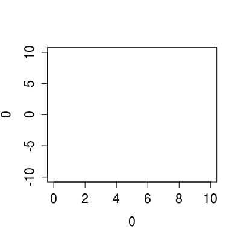
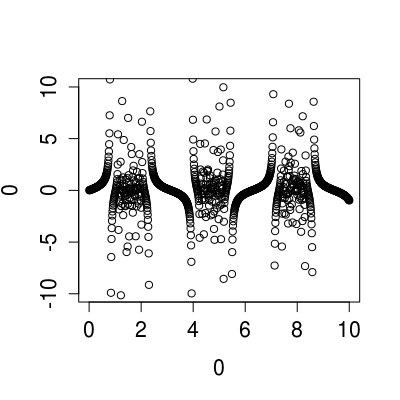

xDo(fn, coll)xDo...(fn, ...)
A list.
Map (a possibly side-effectful) function over a collection and discard the results.
#1. print the files in your current directory. xDo(print, list.files('.'))[1] "demo" [1] "DESCRIPTION" [1] "inst" [1] "LICENSE" [1] "man" [1] "NAMESPACE" [1] "R" [1] "README.md" [1] "staticdocs.Rproj" [1] "vignettes"# or x_(list.files('.'))$xDo(print)[1] "demo" [1] "DESCRIPTION" [1] "inst" [1] "LICENSE" [1] "man" [1] "NAMESPACE" [1] "R" [1] "README.md" [1] "staticdocs.Rproj" [1] "vignettes"[ an arrow object with methods for collections ] $x_() NULL# or even xDo(print %of% list.files, '.')[1] "demo" "DESCRIPTION" "inst" "LICENSE" [5] "man" "NAMESPACE" "R" "README.md" [9] "staticdocs.Rproj" "vignettes"#2. plot a trig function. plot( 0, 0, xlim = c(0, 10), ylim = c(-10, 10), type = 'n')
xDo( x := { y <- tan( sin( x ) / cos( x )^2 ) points(x, y) }, (1:1000) / 100 )
#3. HR Functional Programming # Print "Hello World" n times # xDo is Arrow's construct for mapping over a collection and discarding the result, for use # with side-effectful functions. An anonymous function or print composed with a constant function can # be used to print the actual message. n <- 5 xDo(print %of% xK('hello'), 1:n)[1] "hello" [1] "hello" [1] "hello" [1] "hello" [1] "hello"xDo(num := print('hello'), 1:n)[1] "hello" [1] "hello" [1] "hello" [1] "hello" [1] "hello"
xDelay;
xExecute; xReadChars;
xReadLines; xReadWords;
xStopwatch; xVersion;
xWriteChars; xWriteLines;
xWriteWords